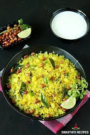

Poha

Description
If there’s one ever-present breakfast dish in a Maharashtrian household, it has to be the Poha. Poha recipe with its few versions like Kanda Poha, Batata Poha, Dadpe Pohe and Indori Poha – is the staple preparation with flattened rice, herbs and spices. The one with kanda means there’s onions in the recipe, and the batata one would be an extra addition of potatoes. Both are vegan and gluten-free, and we love both
Ingredients
- cups poha 114 grams, use thick poha
- 1/4 teaspoon turmeric
- 1/2 teaspoon + 1/8 teaspoon salt divided, adjust to taste
- 1/3 cup green peas I used frozen, soaked in warm water for 10 minutes
- 2 teaspoons oil 10 ml, I used avocado oil
- 1/2 teaspoon mustard seeds
- 1.5 tablespoons raw peanuts
- 1 small red onion chopped
- 1 green chili chopped
- 10-12 curry leaves
- 1/4 teaspoon sugar optional
- 1 tablespoon chopped cilantro + more to garnish
- 1/2 lemon juice of
- sev to garnish
Steps to Follow
- To a strainer, add flattened rice (poha). Rinse it under running water until it turns soft.
- To check if it’s done, press a flake between your thumb and index finger, it should break easily.
- Add turmeric and 1/2 teaspoon salt to the poha and toss to combine. Set it aside while you make the tempering in the pan.
- Heat oil in a pan on medium heat. Once the oil is hot, add the mustard seeds and let them pop.
- Then add the peanuts and saute for a minute or two until they start turning brown.
- Then add the chopped onion, green chili and curry leaves. Cook for 2 minutes until the onions soften.
- Add the green peas (which had been soaked in warm water for 10 minutes prior) and mix. Cook for 2 minutes until raw smell of peas goes away.
- Then add in the rinsed poha and toss to combine. Taste test some poha and if it feels dry, sprinkle little water all over (I usually do that). Cook for 1-2 minutes. Also tastes test and add more salt as needed at this point (I added around 1/8 teaspoon).
- Also add the sugar (if using) and cilantro.
- And then cover the pan with a lid and turn heat to low. Let it be like that for 2 minutes. Then turn off the heat.